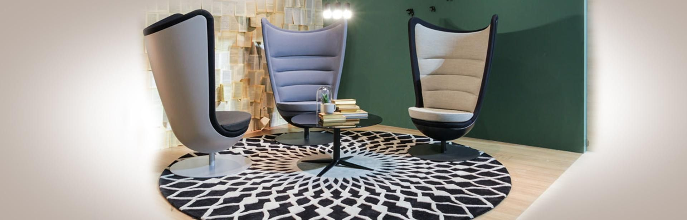
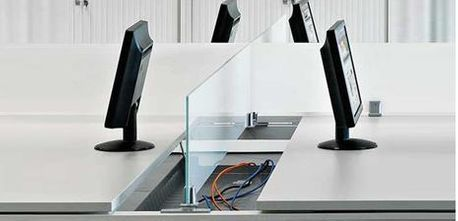
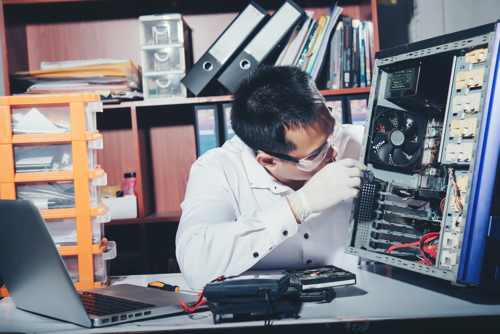

Servidores, redes y ordenadores
Instalación, configuración y mantenimiento de toda la infraestructura informática: puestos de trabajo, servidores, backups, nube privada y redes.
Ver servicios
Desde 2005, un solo interlocutor para servidores, redes, fotocopiadoras, TPV, mobiliario y mantenimiento. Estudiamos la necesidad real de tu empresa y la equipamos con criterio técnico.

01 Informática y Gestión es una empresa de Palencia dedicada a todo lo relacionado con el equipamiento integral de oficinas. Contamos con personal altamente cualificado para ofrecer un servicio de primera calidad a tu empresa.
Estudiamos la necesidad real de cada cliente para proponer soluciones eficientes y rentables. Damos servicio a pymes y particulares en Palencia, Valladolid y Burgos, con cobertura nacional cuando hace falta.
No vendemos equipos sueltos: equipamos oficinas completas. Desde el servidor hasta la silla, con un solo interlocutor para toda tu infraestructura.
Instalación, configuración y mantenimiento de toda la infraestructura informática: puestos de trabajo, servidores, backups, nube privada y redes.
Ver serviciosEquipos digitales multifunción de Olivetti, Ricoh y Brother: impresión, copia y escáner en red, con gestión de costes y servicio técnico incluido.
Ver productosDistribuidor oficial de Actiu, Mobel Línea y Luyando: sillas ergonómicas, mesas, mamparas, persianas y equipamiento para cualquier espacio.
Ver mobiliarioNo vendemos equipos: equipamos oficinas. Desde el servidor a la silla, un solo interlocutor para toda tu infraestructura.
Un método sencillo y con criterio técnico para que tu oficina quede operativa sin sorpresas ni intermediarios.
Visitamos tu oficina y analizamos qué necesitas de verdad: equipos, conectividad y mobiliario. Sin compromiso.
Seleccionamos el equipamiento óptimo entre nuestras marcas oficiales. Presupuesto cerrado, sin sorpresas.
Montamos, configuramos y verificamos que todo funcione: servidores, redes, impresoras y mobiliario, operativos.
Servicio técnico propio para resolver cualquier incidencia. Sin esperas de terceros, sin intermediarios.

Disponemos de servicio técnico propio y multimarca, con contratos de mantenimiento personalizados. Nuestro equipo recibe formación continua para darte una respuesta rápida y eficaz.
Configuramos infraestructuras, mantenemos tus equipos y te asesoramos en el estudio de costes de impresión, con opciones de renting financiero.
Desde el servidor y la red hasta las fotocopiadoras, los TPV, los equipos informáticos y el mobiliario. Un solo interlocutor para toda la infraestructura de tu oficina.
Sí. Disponemos de servicio técnico propio y multimarca, con contratos de mantenimiento personalizados y respuesta rápida, sin depender de terceros.
Tenemos sede en Palencia y damos servicio en las provincias de Palencia, Valladolid y Burgos, con cobertura nacional cuando el proyecto lo requiere.
Sí. Estudiamos opciones de renting financiero con análisis económico para que renueves o amplíes tu equipamiento sin grandes desembolsos iniciales.
01 Informática y Gestión está en activo desde 2005, con más de dos décadas de experiencia equipando oficinas, comercios y hostelería en Palencia.
Estamos en la Av. Cardenal Cisneros 34, en Palencia. Contacta con nosotros por teléfono, WhatsApp o email y te asesoramos sin compromiso.